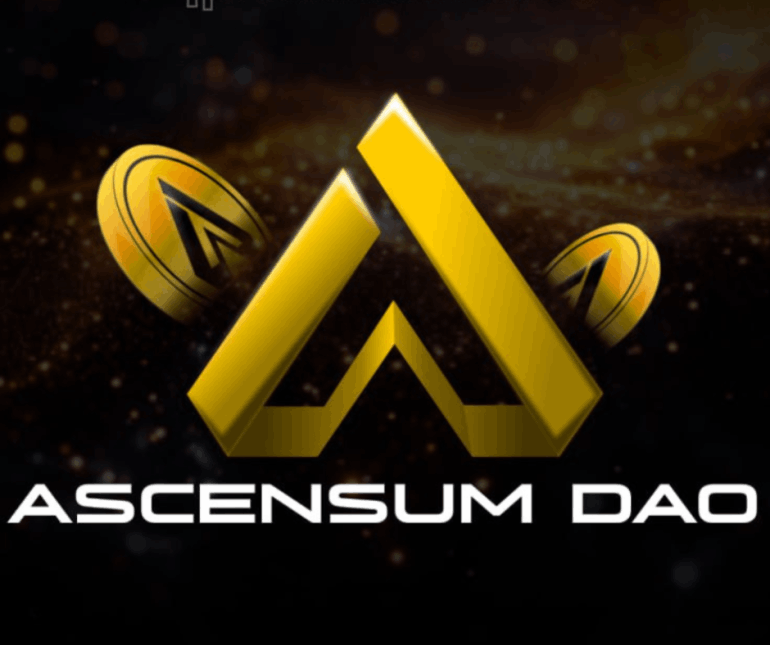
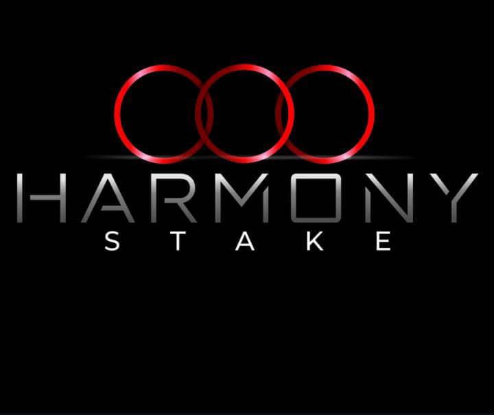
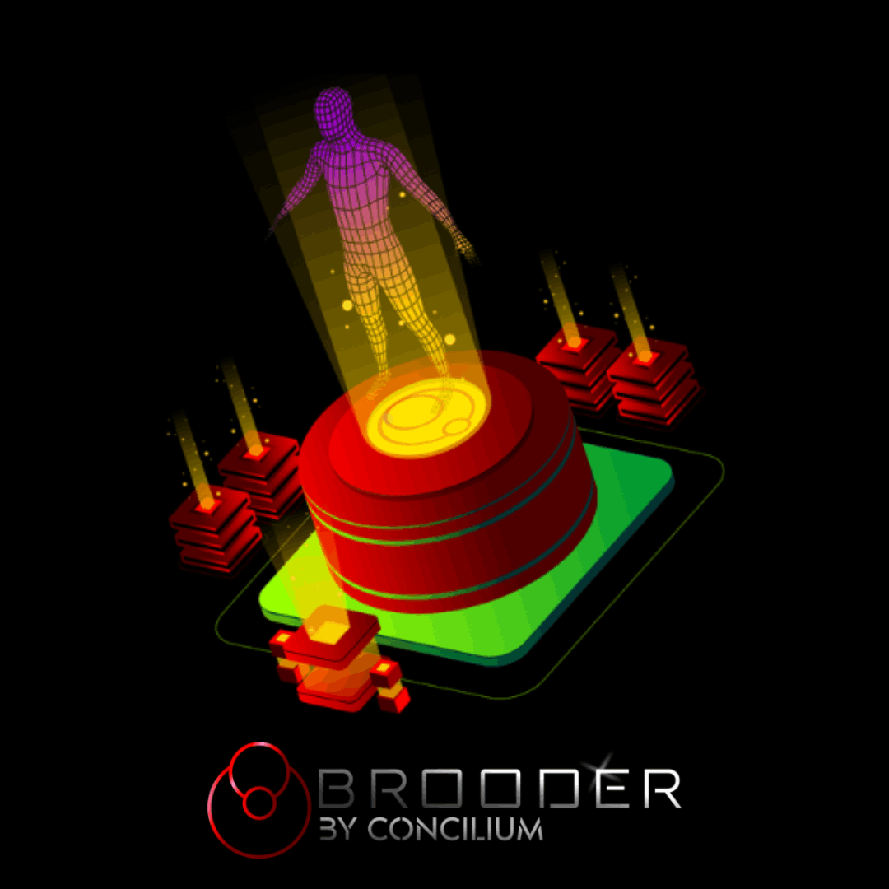

Ascensum DAO
Ascensum DAO es una Organización Autónoma Descentralizada diseñada para redefinir la participación comunitaria en la creación de riqueza digital mediante la adquisición progresiva de nodos, generación de tokens y una lógica de distribución justa y escalable basada en contratos inteligentes y mecanismos descentralizados.
Tutoriales AscensumConcilium
Concilium es un ecosistema blockchain emergente que tiene como objetivo principal consolidar una comunidad activa en el ámbito cripto y en el desarrollo de negocios digitales descentralizados. Estamos próximos a dar un paso significativo: el listado del token $CONCILIUM en los principales exchanges internacionales, lo que marcará una nueva etapa de exposición y liquidez para nuestros usuarios e inversores.
Ver Concilium
Harmony Stake
¡Únete a Harmony Stake con CONCILIUM y haz crecer tus tokens! ¿Quieres obtener ingresos pasivos atractivos mientras apoyas un proyecto innovador y en crecimiento? Te invitamos a participar en Harmony Stake con el token CONCILIUM, donde puedes ganar hasta un 9% mensual en recompensas simplemente delegando tus tokens.
Ver Harmony
Pets Universe
¡Bienvenid@s a Pets Universe! Una puerta de entrada a oportunidades reales dentro del ecosistema educativo de Brooder y el universo financiero descentralizado de Concilium.
Entrar a Pets
Brooder
BROODER es una incubadora de proyectos donde puede hacer realidad tu IDEA. Aquí tenemos todo lo que necesitas para desarrollar tu emprendimiento digital. La Visión de BROODER es construir una SOCIETY P2B2P materializando cada propuesta porque reconocemos que cada persona es el portador de una gran Idea.
Ver Brooder
Configurar las Billeteras
En esta seccion podras conocer todo lo necesario para manejar una Billetera Cripto con total seguridad. Conoceras como crear una billetera, transferir o recibir fondos. Y lo mas importante como comprar en Pancakeswap el Token Concilium, Ascensum, BNB, USDT y cualquier otro activo digital que desees.
Configurar Billetera